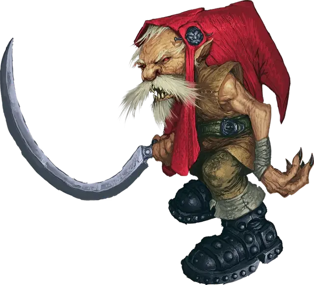

Красный колпак
Redcap
Маленькая Фея, обычно хаотично-злая

Класс Доспеха 14 (природный доспех)
Хиты 45 (6к6 + 24)
Скорость 25 футов
| мод | спас | ||
|---|---|---|---|
| СИЛ | 18 | +4 | +4 |
| ЛОВ | 13 | +1 | +1 |
| ТЕЛ | 18 | +4 | +4 |
| мод | спас | ||
|---|---|---|---|
| ИНТ | 10 | +0 | +0 |
| МДР | 12 | +1 | +1 |
| ХАР | 9 | −1 | −1 |
Навыки Атлетика +6, Восприятие +3
Чувства тёмное зрение 60 футов, пассивное Восприятие 13
Языки Общий, Сильван
Опасность 3 (700 опыта)
Бонус мастерства +2
Среда обитания Болото, Лес, Холмы
Особенности
Железные ботинки. При передвижении красный колпак получает помеху на проверки Ловкости (Скрытность).
Нестандартная сила. При захвате красный колпак считается Средним. Кроме того, владение тяжелым оружием не даёт ему помехи на броски на попадание.
Действия
Мультиатака. Красный колпак совершает три атаки Нечестивым серпом.
Нечестивый серп. . Рукопашная атака оружием: +6 к попаданию, досягаемость 5 футов, одна цель. Попадание: 9 (2к4 + 4) рубящего урона.
Кованое преследование. . Красный колпак передвигается на расстояние не больше своей скорости к существу, которое может видеть, и пинает его своими железными ботинками. Цель должна преуспеть в спасброске Ловкости Сл 14 или получить 20 (3к10 + 4) дробящего урона и упасть ничком.
Описание
Красный колпак – это смертоносный фей, рожденный из жажды крови. Красные колпаки, хоть и маленькие, обладают недюжинной силой, которую используют для охоты и убийства без промедления и сожалений.
В Царстве Фей, или там где этот план соприкасается с миром на перекрестке фей, если разумное существо действует из сильного побуждения к кровопролитию, один или несколько красных колпаков появляются там где кровь убитого впитывается в землю. Поначалу новые красные колпаки выглядят как крошечные окровавленные грибы, едва поднявшие свои шляпки над почвой. Когда лунный свет попадает на одну из этих шляпок, из земли возникает существо, которое выглядит как сморщенный и низкорослый гном со сгорбленной спиной и жилистым телом. У существа остроконечный кожаный колпак, штаны из похожего материала, тяжелые железные сапоги и тяжелое клинковое оружие. С момента пробуждения красный колпак желает лишь убивать и резать, и он отправляется удовлетворять свои желания.
У красных колпаков нет утонченности. Они живут прямыми столкновениями и хаосом смертельной битвы. Даже если красный колпак хотел бы быть скрытным, его выдают тяжелые гремящие шаги из–за железных ботинок. Хотя когда красный колпак подбирается к потенциальной добыче, он может быстро пойти на сближение и нанести злобный удар своим оружием до того, как цель отреагирует.
Желание красного колпака убивать берет свое начало от его воли к жизни. Для поддержки своего противоестественного существования красный колпак должен смачивать свою шляпу в свежей крови своих жертв. Когда рождается красный колпак, его шляпа пропитана кровью и он знает, что если кровь не пополнять хотя бы раз в три дня, то он исчезнет словно его никогда и не существовало.
Некоторые красные колпаки могут почувствовать того, чьи убийства привели к их рождению. Красный колпак может использовать эту врождённую связь, чтобы найти создателя и сделать его своей первой жертвой. Другие же ищут создателя, чтобы насладиться близостью с родственной душой. Индивид, ответственный за создание нескольких красных колпаков на одном и том же месте, может привлечь всю группу на служение отрядом, чтобы они имитировали убийственную работу этого существа. Красные колпаки обычно не работают группами, но в некоторых обстоятельствах их может нанять карга или темный маг, которые знают как призвать красных колпаков из Страны Фей и и заставить работать на себя как ужасающих слуг.
В любом случае, если красный колпак работает с другим существом, то он требует, чтобы ему платили жертвами. Покровитель, который пытается подавить естественную и необходимую жажду крови красного колпака, рискует стать его следующей целью.